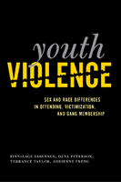

<body bgcolor="#FFFFFF" text="#000000" link="#0000FF" vlink="#CC0000" alink="#CC0000"><center><hr width="350" size="1" align="center" noshade>The first comprehensive overview to examine how sex and race/ethnicity impact the interrelationships among youth violence, violent victimization, and gang membership<hr width="350" size="1" align="center" noshade><p><a href="https://cdcshoppingcart.uchicago.edu/Cart/ChicagoBook.aspx?ISBN=9781439900710&&PRESS=temple" target="_top">Buy this book!</a> | <a href="https://cdcshoppingcart.uchicago.edu/Cart/Cart.aspx?PRESS=temple" target="_top">View Cart</a> | <a href="https://cdcshoppingcart.uchicago.edu/Cart/Cart.aspx?PRESS=temple" target="_top">Check Out</a></p><p></p></center><!--none//--><h1>Youth Violence</h1>
<H2>Sex and Race Differences in Offending, Victimization, and Gang Membership</H2>
<h3>Finn-Aage Esbensen, Dana Peterson, Terrance J. Taylor and Adrienne Freng</h3>
<P>cloth 1-4399-0071-X $70.50, Aug 10, <FONT COLOR=#990033>Available</FONT>
<br>paper 1-4399-0072-8 $31.95, <FONT COLOR=#990033>Available</FONT>
<br>Electronic Book 1-4399-0073-6 $31.95 <FONT COLOR=#990033>Available</FONT>
<BR> 244 pp
6x9
28&nbsp;tables 13&nbsp;figures
</P><BLOCKQUOTE><I>"</i>Youth Violence<i> is a thorough and clearly written analysis. There is no other work that systematically examines the intersection of violent offending, victimization, and gang membership with original empirical analyses. This is a compelling policy concern because it is crucial to understand whether we need customized prevention and intervention programs to address these different phenomena."</i>
<br><b>&#151Cheryl L. Maxson</b>, Associate Professor, Department of Criminology, Law, and Society, University of California, Irvine</I></BLOCKQUOTE>
<p>Violence by and against youth continues to be one of the most challenging subjects facing criminologists. In this comprehensive and integrated analysis of the interrelationships of youth violence, violent victimization, and gang membership, Finn-Aage Esbensen, Dana Peterson, Terrance J. Taylor, and Adrienne Freng seek to understand what causes youth violence and what can be done about it. Using the results from an inclusive study they conducted of eighth-graders in eleven American cities, the authors examine how the nature, etiology, and intersections of youth violence are structured by both sex and race/ethnicity.</p>
<p><em>Youth Violence</em> is pertinent to juvenile justice policy considerations. The authors frame their discussion within the public health perspective, focusing on risk factors associated with violent behavior. The findings address prevalence and incidence, as well as the demographic correlates and cumulative effects of the risk factors associated with engagement in violence. Ultimately, the theories and research methodologies here are essential for understanding the dynamics of youth violence.</p>
<BR>&nbsp;<h2>Excerpt</h2><P>Excerpt available at <a href="http://www.temple.edu/tempress">www.temple.edu/tempress</a></p>
<BR>&nbsp;<h2>Reviews</h2>
<p><I>"</i>Youth Violence<i> fills a clear void in the literature. The major strength of this book is its exhaustive analysis of the GREAT (Gang Resistance Education and Training Program) data in reporting the distribution and nature of violence among teenagers and gang members. The authors have written a useful book that provides a unique big picture view of gang violence and victimization. As such, it should be required reading among those who seek to understand the factors responsible for gang membership, violence, and violent victimization."</I>
<br>&#151<b>Chris Schreck</b>, Department of Criminal Justice, Rochester Institute of Technology
<p><i>"This book is clearly designed for consumption by researchers.... Summing Up: Recommended." </i> <br>&#151;<b><i>Choice</i></b>
<BR>&nbsp;<h2>Contents</h2><P>
<p>List of Figures and Tables
<br>Preface
<br>1. Introduction
<p><b>PART I: Understanding Youth Violence</b>
<br>2. Conceptual Framework
<br>3. Research Design and Methodological Issues
<p><b>PART II: Types of Youth Violence</b>
<br>4. Youth Violence
<br>5. Gang Membership
<br>6. Violent Victimization
<br>7. The Co-occurrence of Violence and the Cumulative Effect of Multiple Risk Factors
<p><b>PART III: Understanding and Responding to Youth Violence</b>
<br>8. Putting It All Together: A Theoretical Framework
<br>9. Responding to Youth Violence
<br>Appendix: Demographic and Risk Factor Measures
<br>References
<br>Index
</P><BR>&nbsp;<H2>About the Author(s)</H2>
<P><b>Finn-Aage Esbensen</b> is the E. Desmond Lee Professor of Youth Crime and Violence in the Department of Criminology and Criminal Justice at the University of Missouri-St. Louis.</P>
<P><b>Dana Peterson</b> is an Associate Professor in the School of Criminal Justice at the University at Albany.</P>
<P><b>Terrance J. Taylor</b> is an Assistant Professor in the Department of Criminology & Criminal Justice at the University of Missouri-St. Louis.</P>
<P><b>Adrienne Freng</b> is an Associate Professor of Criminal Justice at the University of Wyoming.</P>
<BR><H2>Subject Categories</H2>
<p><A HREF="/tempress/law.html" TARGET="_top">Law and Criminology</a>
<BR><A HREF="/tempress/race.html" TARGET="_top">Race and Ethnicity</a>
<BR><A HREF="/tempress/gender.html" TARGET="_top">Gender Studies</a>
</p>
<p align="center"><a href="https://cdcshoppingcart.uchicago.edu/Cart/ChicagoBook.aspx?ISBN=9781439900710&&PRESS=temple" target="_top">Buy this book!</a> | <a href="https://cdcshoppingcart.uchicago.edu/Cart/Cart.aspx?PRESS=temple" target="_top">View Cart</a> | <a href="https://cdcshoppingcart.uchicago.edu/Cart/Cart.aspx?PRESS=temple" target="_top">Check Out</a></p><p><font face="Arial" size="1"><a href="copyright.html" onMouseOver="window.status='Web Copyright Policy';return true;" onMouseOut="window.status=''" title="Web Copyright Policy">&copy;</a> 2015 <a href="http://www.temple.edu" target="new" onMouseOver="window.status='Link to Temple University home page';return true;" onMouseOut="window.status=''" title="Link to Temple University home page">Temple University</a>. All Rights Reserved. http://www.temple.edu/tempress/titles/2046_reg.html</font></p>